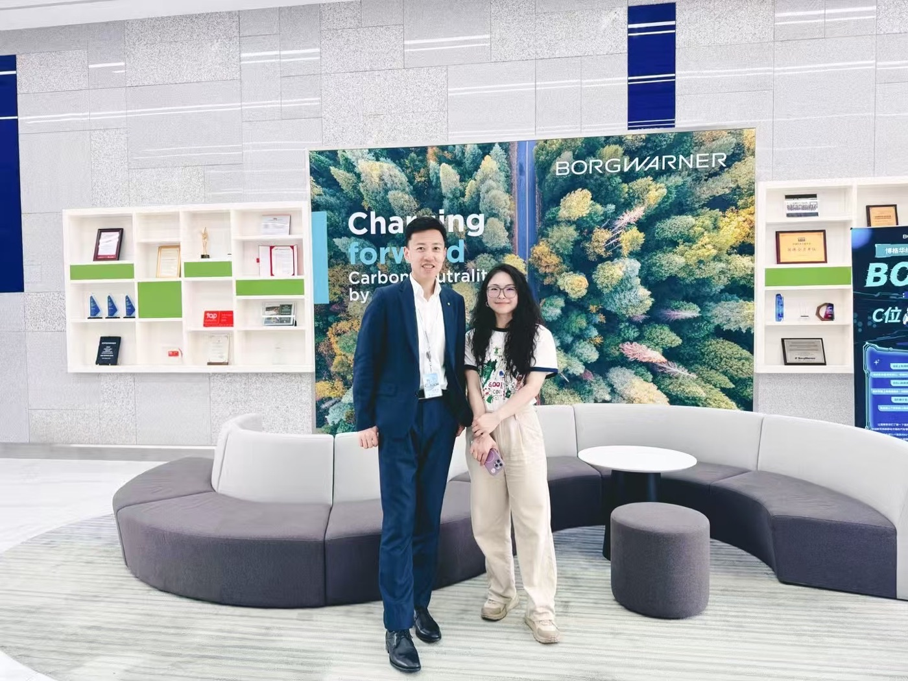
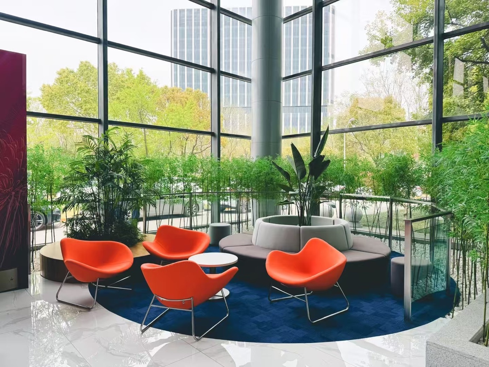
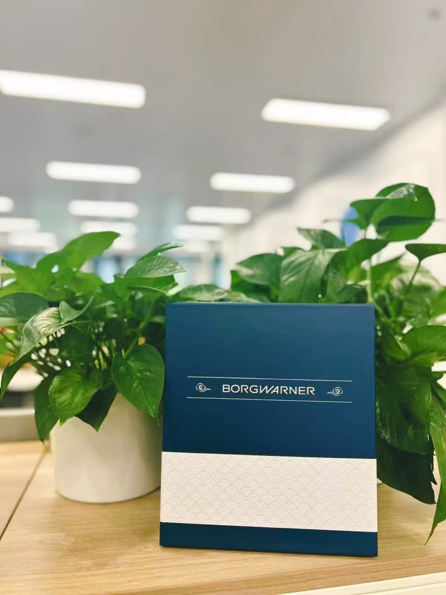

项目背景
业务合并之后，真正的难题是区域利益协同
项目发生在一家全球汽车集团完成两家大型国际汽车业务合并之后。客户希望评估是否建立全球 HR 共享服务模式，并形成覆盖中国、美洲和欧洲的高阶实施路线图。
技术设计并不是最大的挑战。部分区域已经建立了自己的共享服务运营，区域 HR 负责人担心全球 HRSSC 会削弱本地决策权、影响区域自治，并打乱现有服务交付安排。
因此，项目需要同时回答两个问题：全球共享服务能否在业务和运营上创造价值；不同区域如何在保留合理本地要求的同时，接受一个可规模化、可实施的共同方向。
- 交易背景
- 两家国际汽车业务合并
- 项目范围
- 全球 HRSSC 可行性
- 覆盖区域
- 中国 · 美洲 · 欧洲

我的责任
把区域保护转为全球方案讨论
作为德勤中国侧项目经理，我负责协调客户高层业务与 HR 利益相关方，整合德勤全球咨询团队的输入，并支持各方就未来运营模式形成一致。
我的核心作用，是推动讨论从“保护既有区域结构”转向“识别一个既能为业务创造价值、又能回应合理本地要求的全球可扩展模式”。
这项工作需要同时管理项目进度、复杂利益相关关系，以及跨区域团队之间对事实、选项和取舍的理解差异。

推进方式
高管赞助、证据分析与分阶段协作
先把目标、事实和取舍放到同一张桌上，再用试点和早期成果扩大协作范围。
-
01
建立高管赞助与项目治理
从项目启动阶段就与关键业务和 HR 高管对齐项目目标与预期价值，并保持定期沟通和月度领导层进度复盘。
-
02
用证据讨论收益、影响与取舍
结合全球 HR 转型方法、汽车行业基准和运营模式经验，让区域负责人从业务与运营视角评估全球 HRSSC，而不只是把它理解为决策权转移。
-
03
先推进可协作团队与试点机会
优先与更支持转型的区域团队讨论潜在试点和实际推进方式，为未来实施路线图积累可复制的经验。
-
04
用早期进展带动更谨慎的利益相关方
以试点讨论和工作成果建立方向信心，再逐步与最初较为谨慎的区域负责人展开更深入的对话。

价值与结果
按期完成，并形成后续实施基础
- 可行性评估按约定时间完成按期
- 高阶实施路线图覆盖中国、美洲和欧洲客户高层接受
- 全球共享服务方向建立评估未来模式的共同基础共同方向
- 后续转型计划为分阶段实施提供起点实施基础
关键学习
阻力不一定来自不愿改变，也可能来自对决策权、责任边界和团队未来的合理担忧。有效的转型领导需要理解这些担忧、建立信任，并帮助利益相关方看到变化如何为更大范围的组织创造价值。
业务伙伴关系不只是提供技术上正确的人力资源方案，也包括理解业务优先级、影响关键利益相关方，并帮助领导者做出有依据的组织决策。
项目中，我持续与德勤国际咨询团队协作，把中国、美洲和欧洲的不同视角整合为一组连贯、可供客户高层决策的建议。

客户现场片段
工作场所与后续交流
以下为客户场所、雇主品牌展示和后续交流的补充记录；拍摄时间不一定对应 2020 年项目周期，不作为本次项目结果证明。


